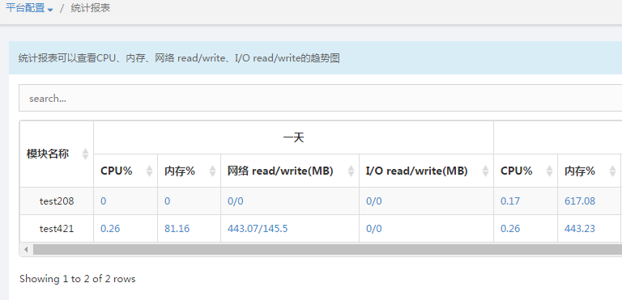
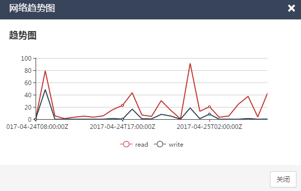

统计报表
功能介绍：统计报表界面主要为用户提供对DCOS系统中所有应用的统计数据概要信息。
统计报表：在统计报表页面中展示了平台中的所有应用模块的一天、一周、一月的CPU%、内存%、网络read/write（MB）、I/O read/write（MB）信息。图3.4-1

图3.4-1
趋势图：在统计报表页面中，点击数据后，系统弹窗选中的数据的趋势图弹窗，以下以网络趋势图为例。图3.4-2

图3.4-2
统计报表搜索：在统计报表页面的“search”框中，输入信息后，统计报表中即会显示出所有匹配该信息的应用模块。